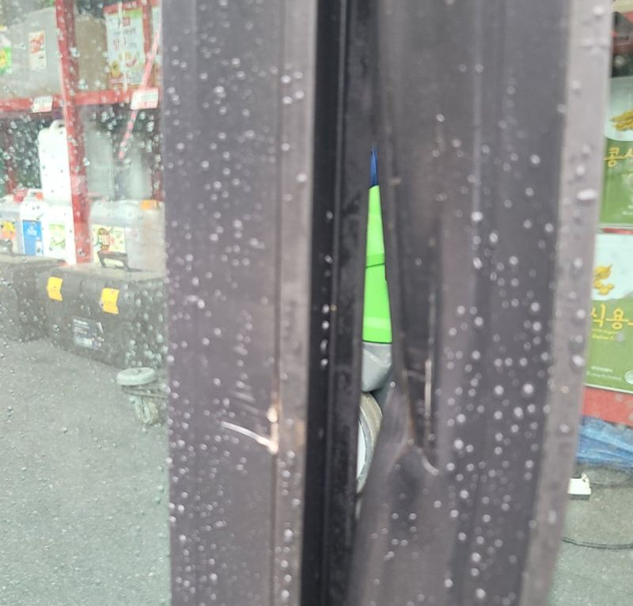
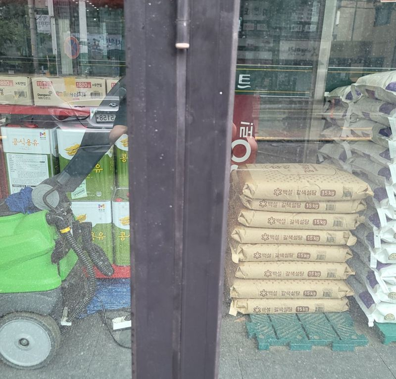
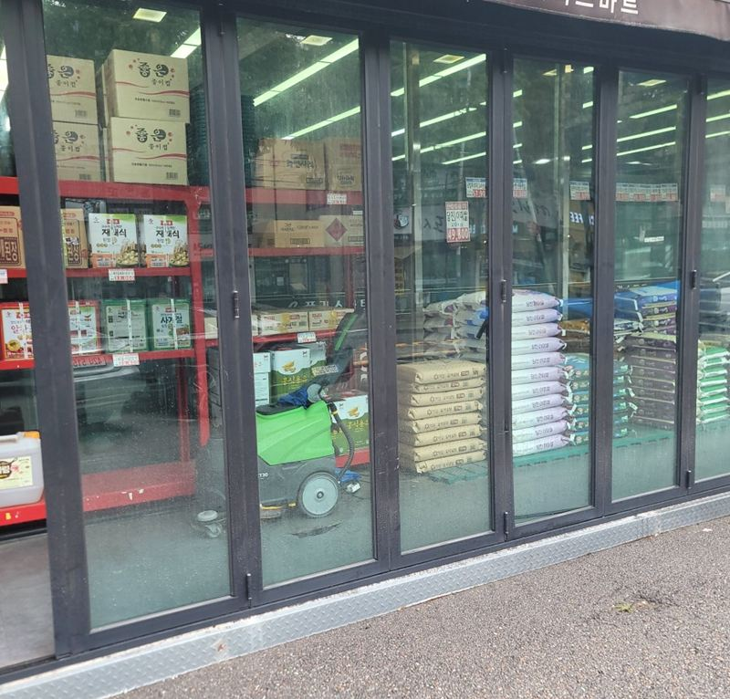
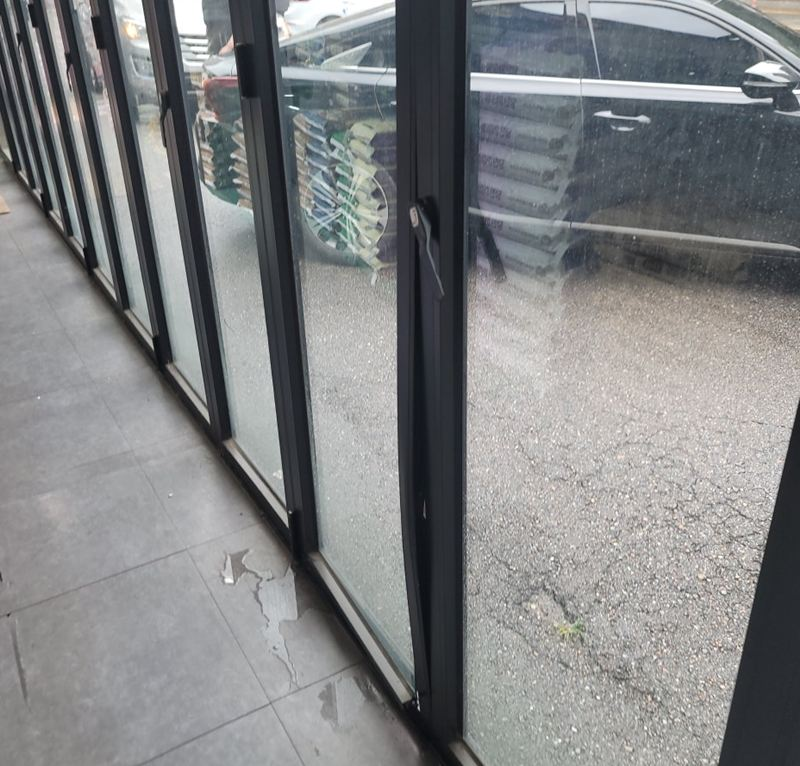
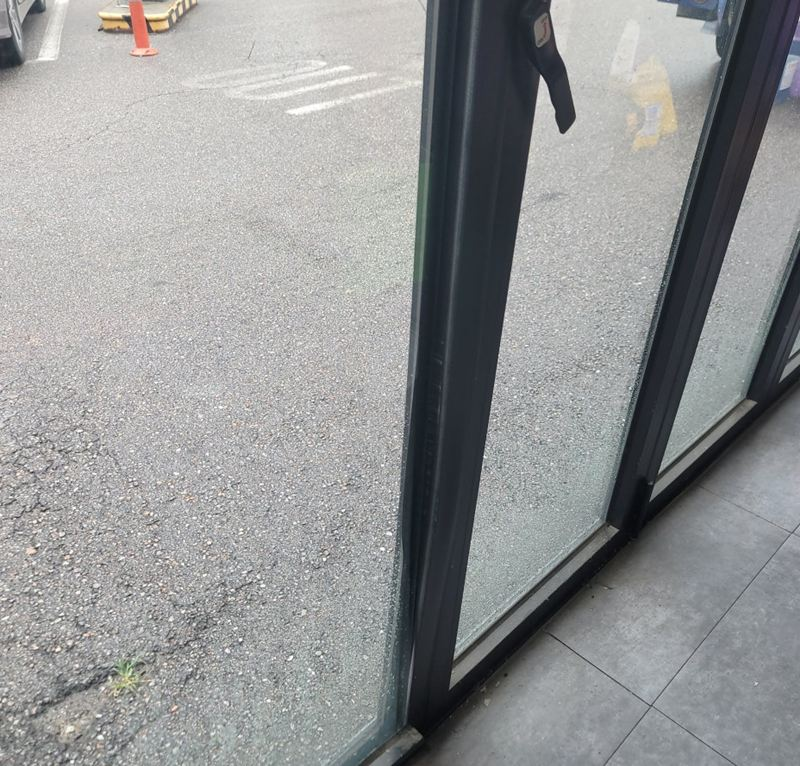
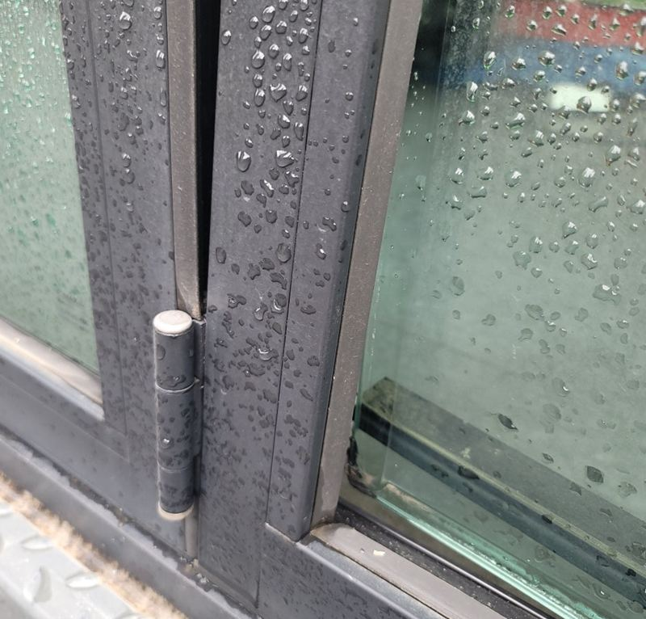
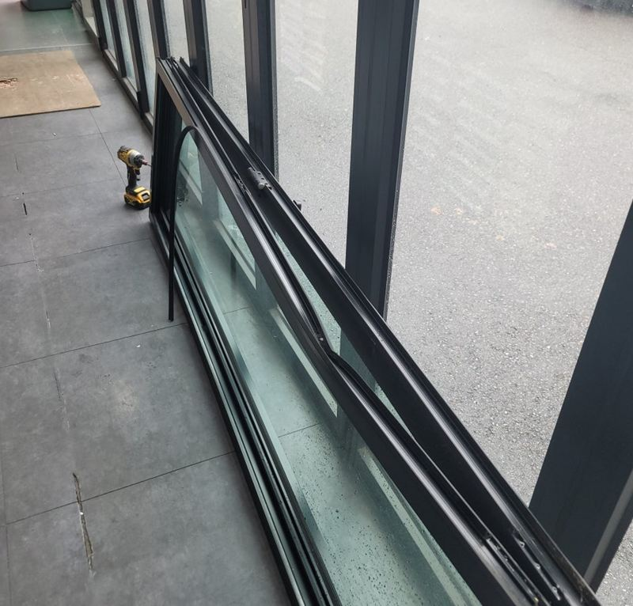
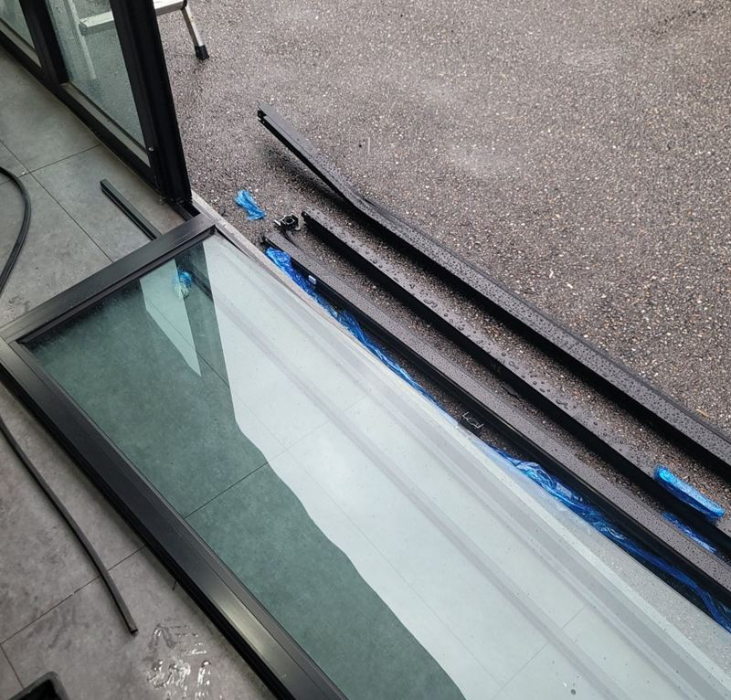
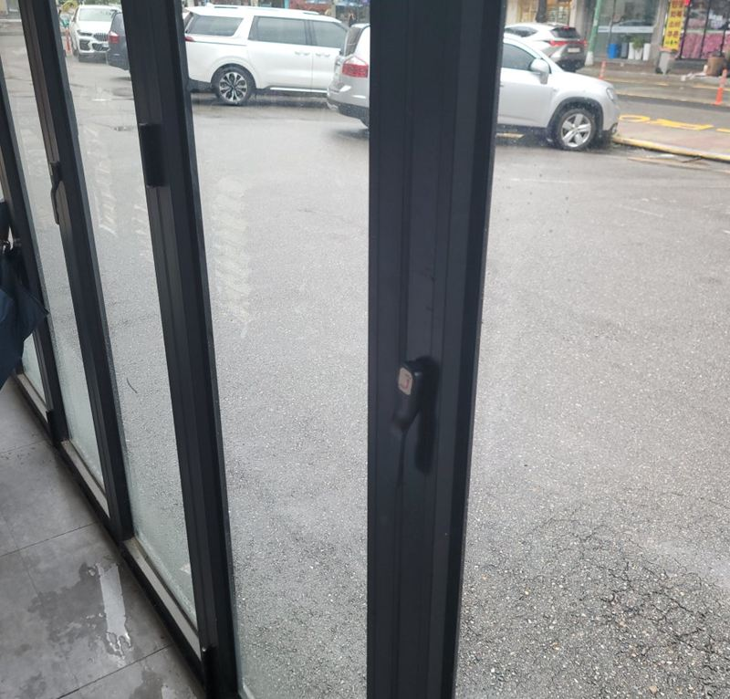

경기광주 폴딩도어 부분 수리 vs 전체 교체 기준

 수리 전수리 후
수리 전수리 후← 밀어서 전후 비교 →
마트 주차장에서 후진하던 차가 출입구 폴딩도어를 들이받았어요. 다행히 유리는 멀쩡했지만 알루미늄 프레임이 찌그러져 문이 끝까지 닫히지 않았어요. 매장은 하루라도 빨리 문을 다시 닫고 싶어 하셨고요. 전체를 바꾸지 않고 휜 프레임만 같은 규격으로 새로 만들어 끼웠어요.
부분 수리냐 전체 교체냐, 이렇게 갈려요
| 손상 부위 | 판단 |
|---|---|
| 유리만 깨짐 | 유리만 맞춤 제작해 교체. 제작 기간이 필요해요. |
| 프레임 휨 | 같은 규격 프레임을 만들어 그 짝만 교체 가능. |
| 레일 뒤틀림 | 레일이 상하면 부분 교체가 어려워 전체 교체로 이어지기 쉬워요. |
그래서 눈에 보이는 찌그러짐만 볼 게 아니라 레일과 힌지까지 같이 확인하는 게 먼저예요. 이 현장은 레일이 버텨 준 덕분에 부분 교체로 끝낼 수 있었어요.


휜 프레임만 바꾸는 과정
-
유리 보호하며 문짝 탈착
유리가 깨지지 않게 보호하면서 손상된 짝을 떼어 냈어요. 프레임을 빼는 동안 레일이 같이 상하지 않게 주의했어요.


-
같은 규격 프레임 장착
미리 같은 치수로 맞춰 만든 프레임에 유리를 옮겨 끼우고, 수직과 수평을 맞춰 레일에 다시 걸었어요. 규격이 조금만 달라도 틈이 생기거나 접힐 때 걸려요.


-
힌지 조정과 개폐 확인
힌지를 조여 짝끼리 맞물리는 간격을 맞추고, 여러 번 접고 펴며 닫힘을 확인했어요.


영업 중인 매장이라면
마트·카페·상가는 출입구가 열려 있는 시간이 곧 손해예요. 그래서 현장을 먼저 보고 필요한 프레임을 미리 맞춰 와서, 방문한 날에는 떼고 끼우는 작업만 하도록 일정을 짰어요. 사전 진단을 꼼꼼히 할수록 매장이 문을 열어 둬야 하는 시간이 줄어요.
파손 폴딩도어, 이런 상황에서 연락 주세요
- 차에 받혀 문이 안 닫혀요유리가 멀쩡하면 프레임만 바꿔 끝나는 경우가 있어요. 레일 상태를 함께 찍어 주세요.
- 유리 한 장에 금이 갔어요그 짝 유리만 맞춤 제작해 바꿀 수 있어요. 제작 기간 동안 임시 조치를 상의해요.
- 한쪽이 처져 바닥에 끌려요힌지가 풀렸거나 프레임이 처진 경우예요. 조정으로 될지 교체가 필요한지 봐요.
- 매장이라 빨리 닫아야 해요사진으로 먼저 진단하고 부품을 준비해 방문해서 문 열어 두는 시간을 줄여요.
파손 폴딩도어 질문
차량 사고라 보험 처리하려는데 서류가 필요한가요?
파손 사진과 작업 내용이 필요할 수 있어요. 작업 전후 사진을 남겨 드릴게요.
유리가 깨졌으면 시간이 더 걸리나요?
유리는 규격대로 맞춰 만들어야 해서 제작 기간이 더 들어요. 그동안 임시 조치를 상의해요.
다른 짝도 같이 바꿔야 하나요?
레일과 다른 짝이 멀쩡하면 손상된 짝만 바꿔요.
프레임 맞춤 제작은 얼마나 걸리나요?
규격과 수량에 따라 달라요. 사진과 치수를 먼저 받아 준비 기간을 알려 드리고, 그동안 문을 임시로 고정해 둘 방법도 함께 봐요.
부분 교체한 짝만 색이 달라 보이지 않나요?
같은 계열 프레임으로 맞춰 만들어서 멀리서는 차이가 거의 없어요. 오래된 문은 바랜 정도에 따라 조금 차이가 날 수 있어요.
카페·학원 폴딩도어도 하나요?
네, 마트뿐 아니라 카페, 학원, 상가 출입구 폴딩도어도 같은 방식으로 수리해요.
레일이 휘었는지 직접 확인할 수 있나요?
문을 천천히 밀었을 때 특정 구간에서만 걸리거나, 레일 아래 틈이 일정하지 않으면 휘었을 가능성이 커요. 그 부분을 찍어 보내 주세요.
같은 폴딩도어, 다른 현장
손상된 짝 가까이, 폴딩도어 전체, 위·아래 레일을 찍어 보내 주세요.
전화 상담 010-4517-9872